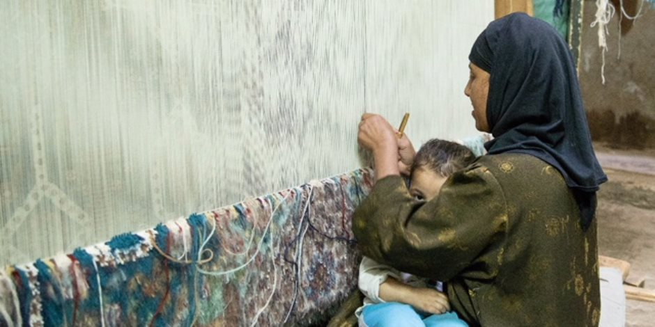

النساء المطلقات و المعيلات
تضع الدولة المصرية ضمن أولوياتها، العمل على تمكين المرأة اقتصاديا فى كافة المبادرات التى تعمل عليها، للنهوض بمستوى معيشة المواطن المصرى، وتترجم ذلك بشكل رئيسى فى المبادرة الرئاسية "حياة كريمة"، ، حيث تعمل الدولة من خلال قطاعاتها المختصة على بحث آليات دعم المرأة وتحسين دخلها بقرى الريف.
وتتمثل المرأة المعيلة ضمن الفئات المستهدف تحسين دخلها وأوضاعها المعيشية فى آليات اختيار القرى وترتيب الأولويات، وكان قد أكد الرئيس عبد الفتاح السيسى، خلال كلمته باحتفالية عيد المرأة المصرية، أن الدولة تحركت بشكل كبير فى مشروع "حياة كريمة" من أجل دعم المرأة المصرية.

وتعمل المبادرة على تحسين الخدمات ورفع كفاءة مشروعات المياه والصرف الصحى وتأهيل المنازل ضمن برنامج "سكن كريم"، وتطوير المنظومة الصحية والتعليمية وهو ما سيصب بشكل غير مباشر فى دعم المرأة المصرية، فهناك حرص من الدولة على تمكين امرأة الريف مباشرة، اجتماعيا واقتصاديا.
ونرصد ما تم إعلانه فى ذلك الصدد حسب ما أعلنته الحكومه وزارة التضامن
:
- - يشمل "تكافل وكرامة" 18% من السيدات المعيلات بتكلفة 3.4 مليار جنيه سنويا
- -ارتفاع قيمة القروض الميسرة إلى 1.4 مليار جنيه تستفيد منه 220 ألف سيدة فى عام 2021
- - ملاحقة سماسرة الإقراض لحل أزمة الغارمات وتنفيذ حملات توعية لترشيد الاستهلاك غير الواعى
- - حصر الأسر وقياس الوعى وتدريب الرائدات الريفيات والمكلفات بالخدمة العامة والزيارات المنزلية
- - التشجيع على عودة الحرف اليدوية والتاريخية المعروفة عن كل قرية والتى يمكن عمل المرأة بها
- - التوسع فى عيادات الصحة الإنجابية "2 كفاية"
- - توفير 41 مركزا بـ22 محافظة لخدمة النساء العاملات لتشجيعهن للمشاركة فى سوق العمل
- - إلحاق الفتيات بدورات تدريبية لكيفية بدء مشروع دون التعرض لمخاطر
- - إنشاء مشروعات للمرأة المعيلة والأرامل والمطلقات وفقا لقدرات كل أسرة كمشروعات صغيرة
- - نجاح "التضامن" فى استفادة 131 ألف سيدة بأسرهم بالدعم المقدم
- - زيادة إنشاء مراكز إعداد الأسر المنتجة وورش التدريب
- - تمكين المرأة ودعمها وتدريبها على كيفية الدخول فى مشروعات صغيرة
- - تتواصل الجهود لبحث آليات التوسع فى دعم المرأة بقرى الريف .
- - ارتفاع عدد الأسر المستفيدة من برنامج "تكافل وكرامة" إلى 14.3 مليون فرد بتكلفة 19 مليار جنيه 2021، يمثل السيدات 78% من إجمالى المستفيدين.
Home Page